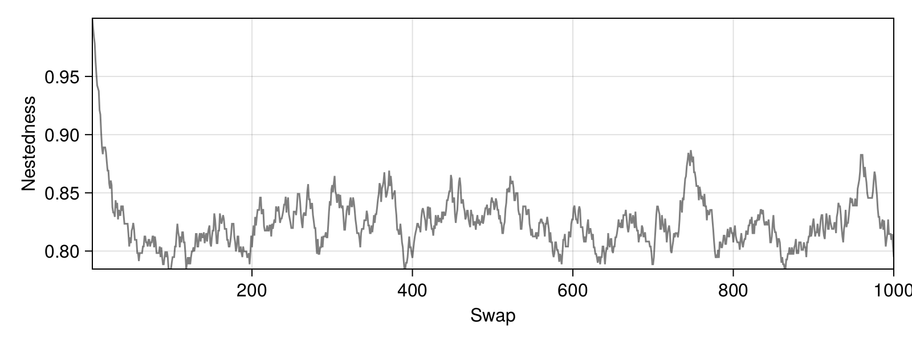

Permutations of networks
Abstract
The methods presented in this page perform network permutation, i.e. they move interactions around while also respecting a number of constraints. Permutations are used in null hypothesis testing, or can be used alongside e.g. simulated annealing to bring networks closer to a specified structure.
The functions for permutations are using an edge-swap algorithm, in which the endpoint of interactions is switched to re-wire the network without changing the degree distribution. Each call to the swap! function will modify the network, and perform a single edge swap.
Maximum iterations when doing permutations
Every permutation will try up to SpeciesInteractionNetworks.SWAP_MAXITER times (defaults to 100) to find a suitable pair of edges to swap, and then return the network unshuffled if they failed to find a suitable pair of edges to swap. This value can be changed.
Permutation constraints
Permutations are constrained, in that we can guarantee that the resulting network may have structural properties that are similar to the original network. The type of constraint we apply is determined by the PermutationConstrant enumerated type.
#
SpeciesInteractionNetworks.PermutationConstraint — Type.
PermutationConstraint
The PermutationConstraint specifies which structural constraint is enforced. It is defined as an abstract type, and the subtypes can be passed as the second argument to swap!.
Currently supported constraints are Degree (degree distribution is maintained), Generality (number of out-going links is maintained), Vulnerability (number of in-going links is maintained), and Connectance (only the connectance is maintained). Note that in addition, species cannot become disconnected, even if the constraint is not acting on the degree / degree distribution.
Permutation of a network
Note that the permutations are currently limited to networks with Binary interactions.
#
SpeciesInteractionNetworks.swap! — Function.
swap!(N::SpeciesInteractionNetwork{<:Partiteness, <:Binary})
Performs one swap of interactions in the network. If no PermutationConstraint is given as a second argument, the degree distribution of all species will be maintained.
swap!(N::SpeciesInteractionNetwork{<:Partiteness, <:Binary}, ::Type{Degree})
Permutations with a constraint by degree work by picking two interacting species pairs, (r1, s1) and (r2, s2), and trying to replace them by (r1, s2) and (r2, s1).
swap!(N::SpeciesInteractionNetwork{<:Partiteness, <:Binary}, ::Type{Generality})
Permutations with a constraint by degree work by picking one interacting species pair, (r1, s1), and a new stem species s3, trying to replace them by (r1, s3). This function only applies if the result of this permutations does not remove the last incoming link from s1.
swap!(N::SpeciesInteractionNetwork{<:Partiteness, <:Binary}, ::Type{Connectance})
Permutations with a constraint by connectance will randomly (and with equal probability) perform a move that is constrained by degree, generality, or vulnerability.
Illustration
To showcase swap! in practice, we will work through through a simple example of (i) generating a perfectly nested network, (ii) shuffling interactions by maintaining the generality of top-level species, and (iii) looking at the way the nestdeness of the entire network changes with each successive swap.
using SpeciesInteractionNetworks
import CairoMakie
We can generate a nested network rather easily, by creating a matrix of binary interactions, where the species interact with species from a lower rank:
A = zeros(Bool, (10, 14))
for i in axes(A, 1)
for j in axes(A, 2)
if i <= j
A[i,j] = true
end
end
end
We can declare a network without having to define all of the species, by first wrapping our matrix inside a Binary type, and then generating a Bipartite species set with the right number of species:
edges = Binary(A)
nodes = Bipartite(edges)
N = SpeciesInteractionNetwork(nodes, edges)
SpeciesInteractionNetwork{Bipartite{Symbol}, Binary{Bool}}(Bipartite{Symbol}([:top_1, :top_2, :top_3, :top_4, :top_5, :top_6, :top_7, :top_8, :top_9, :top_10], [:bottom_1, :bottom_2, :bottom_3, :bottom_4, :bottom_5, :bottom_6, :bottom_7, :bottom_8, :bottom_9, :bottom_10, :bottom_11, :bottom_12, :bottom_13, :bottom_14]), Binary{Bool}(sparse([1, 1, 2, 1, 2, 3, 1, 2, 3, 4 … 1, 2, 3, 4, 5, 6, 7, 8, 9, 10], [1, 2, 2, 3, 3, 3, 4, 4, 4, 4, 5, 5, 5, 5, 5, 6, 6, 6, 6, 6, 6, 7, 7, 7, 7, 7, 7, 7, 8, 8, 8, 8, 8, 8, 8, 8, 9, 9, 9, 9, 9, 9, 9, 9, 9, 10, 10, 10, 10, 10, 10, 10, 10, 10, 10, 11, 11, 11, 11, 11, 11, 11, 11, 11, 11, 12, 12, 12, 12, 12, 12, 12, 12, 12, 12, 13, 13, 13, 13, 13, 13, 13, 13, 13, 13, 14, 14, 14, 14, 14, 14, 14, 14, 14, 14], Bool[1, 1, 1, 1, 1, 1, 1, 1, 1, 1 … 1, 1, 1, 1, 1, 1, 1, 1, 1, 1], 10, 14)))
The initial nestedness of this network, measured using η is (network, top-level contribution, bottom-level contribution):
(η(N), η(N,1), η(N,2))
(1.0, 1.0, 1.0)
In order to generate the series of successive permutations, we will define an empty array of values, and then for each successive step, calculate the nestedness of the network, and then swap interactions under the given constraint.
nestedness_series = zeros(Float64, 1000)
for i in axes(nestedness_series, 1)
nestedness_series[i] = η(N)
swap!(N, Generality)
end
A note about swaps and underlying nodes/edges
When we perform the swap! operation, we are modifying the network (this is what we want!), but we are also modifying the edges object. If you want to re-use the edges in another network, be mindful of the fact that this will be the randomized edges. See copy for a way to create new copies of a network.
Finally, we can plot the result, to check that 1000 swaps are enough to bring us to some sort of equilibrium of the randomized nestedness:
f = CairoMakie.Figure(backgroundcolor = :transparent, resolution = (800, 300))
ax = CairoMakie.Axis(f[1,1], xlabel="Swap", ylabel = "Nestedness")
CairoMakie.lines!(ax, nestedness_series, color=(:black, 0.5))
CairoMakie.tightlimits!(ax)
CairoMakie.current_figure()
